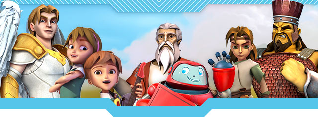
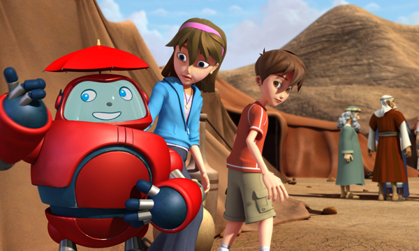
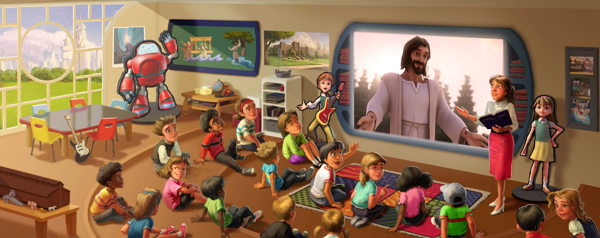
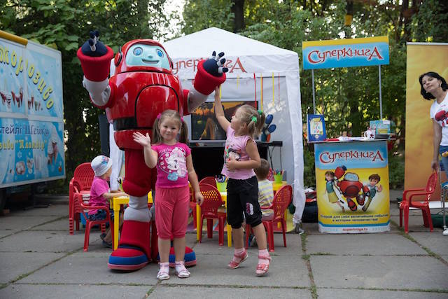
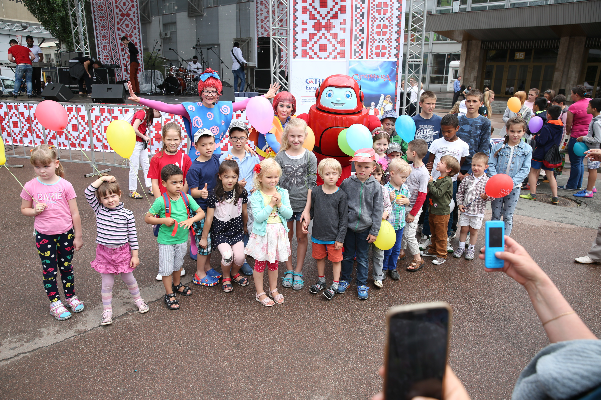
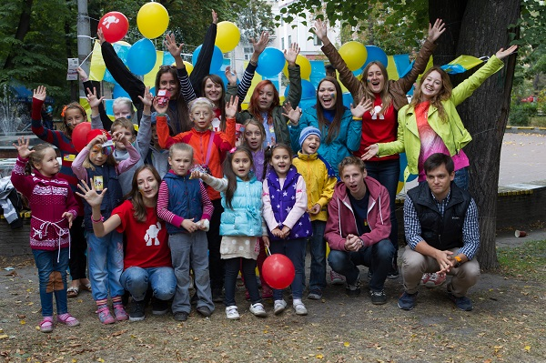

<!DOCTYPE html>
<html lang="en">
  <head>
    <meta charset="UTF-8"/>
    <meta name="viewport" content="width=device-width, initial-scale=1.0"/>
    <meta http-equiv="X-UA-Compatible" content="ie=edge"/>
    <!-- build:css css/main.min.css-->
    <!-- bower:css-->
    <link rel="stylesheet" href="js/all4site-fontawesome/dist/css/fontawesome-all.css"/>
    <link rel="stylesheet" href="js/materialize/dist/css/materialize.css"/>
    <link rel="stylesheet" href="js/animate.css/animate.css"/>
    <link rel="stylesheet" href="js/all4site-ulkit/dist/css/uikit.css"/>
    <!-- endbower-->
    <link rel="stylesheet" href="css/main.min.css"/>
    <!-- endbuild-->
    <link rel="icon" href="img/favicon.png"/>
    <title>Document</title>
  </head>
</html>
<body>
  <div class="header grid">
    <div style="background: url('img/header.jpg')" class="picture"></div>
    <div class="logosb"></div>
  </div>
  <div class="content grid">
    <div class="article grid">
      <h1>о проекте</h1>
      <div class="textabout">
        <p>«Суперкнига» - мультсериал, который знакомит детей с Библией, прививает библейские ценности и формирует здоровые модели поведения.</p>
        <p>Мы предлагаем полезный и увлекательный видеоресурс, общение с героем мультсериала Робиком, методические материалы для занятий c детьми, программы для воскресных школ и летних лагерей и сувенирную продукцию бренда «Суперкнига».</p>
      </div>
      <div class="image"></div>
    </div>
    <div class="accordeon">
      <ul class="collapsible">
        <li>
          <div class="collapsible-header active"><span>видео и интернет - ресурсы для детей</span></div>
          <div class="collapsible-body grid">
            <p>
              «Суперкнига» - это телевизионный христианский анимационный сериал, который в доступной форме представляет хронику событий Ветхого и Нового Завета Библии.
              За 30 лет существования мультфильм выходил на экранах в 106 странах мира и переведен на 43 языка. Его посмотрели 500 миллионов зрителей.
              Новые серии «Суперкниги» с элементами 3d-графики уже увидели 162 миллиона детей …. стран мира.
            </p>
            <p>
              Сайт Superkniga.tv и его мобильная версия дают детям возможность смотреть мультфильмы изучать информацию о персонажах Библии, играть и – самое главное – знакомит их с Иисусом Христом – Спасителем.
              Мы ведем диалог с подписчиками наших страниц Робик и Суперкнига в социальных сетях.
              Программы для воскресных школ и лагерей «Суперкнига» создает образовательные материалы для занятий с детьми в воскресных школах,  Клубах Суперкниги и лагерях отдыха.
              
            </p>
          </div>
        </li>
        <li>
          <div class="collapsible-header"><span>академия суперкниги</span></div>
          <div class="collapsible-body grid">
            <p>Академия Суперкниги - это годичная учебная программа для воскресной школы в электронном формате: 40 занятий, которые в доступной и увлекательной форме познакомят учеников с Библией. На каждом занятии дети смотрят одну из серий мультфильма «Суперкнига», историко-археологические видеосюжеты, молятся, изучают стихи из Библии, участвуют в творческих играх, узнают разницу между знанием о Боге и знанием Бога.</p>
          </div>
        </li>
        <li>
          <div class="collapsible-header"><span>лагеря отдыха</span></div>
          <div class="collapsible-body grid">
            <p>10-дневная обучающе-развлекательная программа для проведения выездного или дневного летнего лагеря для детей 6-14 лет предоставляет детям возможность изучить и практически применить библейские истины, весело провести время, завести друзей, развить положительные качества характера и научиться делать добро.</p>
          </div>
        </li>
        <li>
          <div class="collapsible-header"><span>клуб суперкниги</span></div>
          <div class="collapsible-body grid">
            <p>
              Клубы Суперкниги - это сообщество юных любителей Суперкниги. Дети смотрят серии  мультфильма «Суперкнига», учатся на примере героев, как правильно решать сложные моральные вопросы, в игровой форме изучают Библию, строят дружеские отношения друг  с другом.
              В странах СНГ открыто более 300 Клубов Суперкниги. Карта клубов
            </p>
          </div>
        </li>
        <li>
          <div class="collapsible-header"><span>социальные проекты</span></div>
          <div class="collapsible-body grid">
            <p>Команда «Суперкниги» посещает интернаты, детские дома и другие учреждения, организовывает детям праздники, радует подарками и знакомит их с Библией. Робик, один из главных героев мультфильма, проводит конкурсы и участвует в тематических мероприятиях. Он отвечает на вопросы детей в социальных сетях, чате и по телефону</p>
          </div>
        </li>
      </ul>
    </div>
  </div>
  <div class="donate grid">
    <div class="imagedonate grid"><a href="https://donate.emmanuil.tv/superbook" class="btndonate btn-large pulse">пожертвовать</a>
      <div class="blurewrapper">
        <div class="blure"></div>
        <div class="textdonate">
          <p>Станьте партнером Суперкниги и подарите подрастающему поколению библейское мировоззрение и ценности.<br/>Поддержите проект финансово.</p>
        </div>
      </div>
    </div>
  </div>
  <div class="content grid">
    <div class="progres grid">
      <div class="block block1 grid">
        <h4 data-count="25" class="counter-value"></h4><span>
          Лет истории «Суперкниги»
          на постсоветском пространстве</span>
      </div>
      <div class="block block2 grid">
        <h4 data-count="58000" class="counter-value"></h4><span>Подписчиков в соцсетях</span>
      </div>
      <div class="block block3 grid">
        <h4 data-count="300" class="counter-value"></h4><span>Клубов Суперкниги и воскресных школ, использующих программу</span>
      </div>
      <div class="block block4 grid">
        <h4 data-count="39" class="counter-value"></h4><span>
          Новых серий мультфильма на русском
          и украинском языках</span>
      </div>
    </div>
  </div>
  <div class="contacts grid">
    <div class="imgcontacts grid">
      <div class="blurewrapper grid">
        <h1>наши контакты</h1>
        <div class="blure"></div>
        <div class="textcontacts grid">
          <div class="left grid"><a href="#!"><span>сайт для детей</span></a><a href="#!"><span>сайт для взрослых</span></a><a href="#!"><span>сайт магазин</span></a></div>
          <div class="hr"></div>
          <div class="right grid">
            <div class="social grid"><a href="#!" class="icon grid">
                <div class="fab fa-facebook-f"></div></a>
              <div class="icon grid">
                <div class="fab fa-youtube"></div>
              </div>
              <div class="icon grid">
                <div class="fab fa-instagram"></div>
              </div>
            </div>
            <div class="con grid">
              <div class="email grid"><i>
                  <div class="far fa-envelope"></div></i><span>info@superknigaclub.tv</span></div>
              <div class="phone grid"><i>
                  <div class="fas fa-phone-volume"></div></i><span>+3067-404-29-69</span><small>(Украина)</small><span>+7926-33-22-777</span><small>(Россия)</small></div>
            </div>
          </div>
        </div>
      </div>
    </div>
  </div>
  <!-- build:js js/main.min.js-->
  <!-- bower:js-->
  <script src="js/jquery/dist/jquery.js"></script>
  <script src="js/materialize/dist/js/materialize.js"></script>
  <script src="js/all4site-ulkit/dist/js/uikit.js"></script>
  <script src="js/all4site-ulkit/dist/js/uikit-icons.js"></script>
  <script src="js/countUp.js/dist/countUp.min.js"></script>
  <!-- endbower-->
  <script src="js/main.js"></script>
  <!-- endbuild-->
</body>